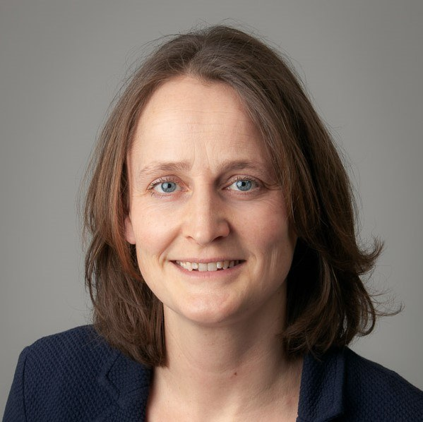
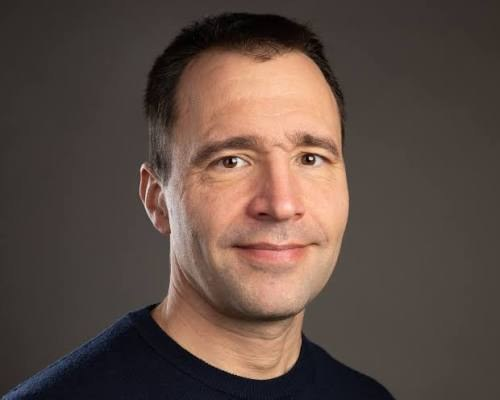
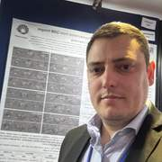
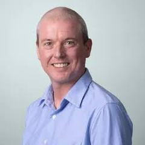
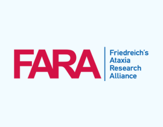
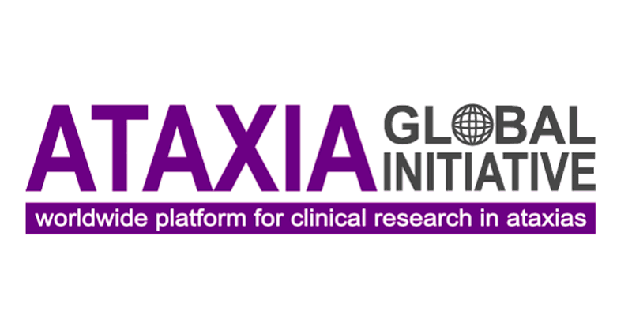

International Scientific Meeting
Cerebellum
Neuroimaging
Symposium 2027
Advancing cerebellar imaging from acquisition and quantitative analysis to biology, disease, clinical translation and trial-ready biomarkers.
April 14–16, 2027Wednesday–Friday
University of CampinasCampinas, Brazil
Expression of Interest now open
Interested in joining us in Campinas?
Complete the Expression of Interest form for the Cerebellum Neuroimaging Symposium 2027.
Plan ahead
Important Dates
About
A focused forum for the rapidly advancing field of cerebellar imaging.
The Cerebellum Neuroimaging Symposium 2027 will bring together leading experts in neuroimaging, neurology and clinical research to advance understanding of cerebellar structure and function and to support the development and implementation of imaging biomarkers in neurological and rare diseases.
The meeting is designed for an intimate audience of approximately 100 participants, including internationally recognized researchers, clinician-scientists, early-career investigators, industry partners and non-profit organizations.
Confirmed keynote speakers
Six keynote speakers confirmed.

Wietske van der Zwaag
Netherlands Institute for Neuroscience
Ultra High-Field Cerebellum MRI
Jörn Diedrichsen
Western University, Canada
Imaging the Cerebellum Across the Normative LifespanJessica A. Bernard
Texas A&M University, USA
Cerebellar Functional OrganisationTorgeir Moberget
University of Oslo, Norway
Neurodevelopmental, Psychiatric, and Neurological (non-ataxia) DiseasesMarcondes França
University of Campinas, Brazil
Neuroimaging in Cerebellar AtaxiasGülin Öz
University of Minnesota, USA
Imaging Biomarkers for Clinical TrialsPreliminary scientific program
Three days from methodology to clinical translation.
Day 1 — Novel Methodology and Lifespan Imaging
RegistrationWelcome coffee
Opening RemarksThiago Rezende & Ian Harding
Keynote 1Ultra High-Field Cerebellum MRI — Prof. Wietske van der Zwaag
BreakCoffee
Session 1 — Selected Talks (×4)High-Field MRI · AI-based segmentation & QC · Quantitative Harmonisation Strategies
Discussion 1What is the future of cerebellum MRI?
LunchPoster Viewing
IndustryTBC
Keynote 2Imaging the Cerebellum Across the Normative Lifespan — Prof. Jörn Diedrichsen
Session 2.1 — Selected Talks (×2)Population-level cerebellar atlas · Normative modeling approaches · Development and aging trajectories
Break
Session 2.2Selected Talks (×2), continued
Discussion 2Does the cerebellum have a unique profile of development and aging relative to the rest of the brain?
Day 2 — Cerebellar Functional Organisation and Pathology: Non-Ataxia
NetworkingCoffee
IndustryTBC
Keynote 3Cerebellar Functional Organisation — Prof. Jessica A. Bernard, Texas A&M University
BreakCoffee
Session 3 — Selected Talks (×4)Functional gradients and domain organization · Cerebellar connectivity · Cerebellar plasticity and learning
Discussion 3What mysteries remain in understanding cerebellar functional anatomy?
LunchPoster Viewing
Keynote 4Neurodevelopmental, Psychiatric, and Neurological (non-ataxia) Diseases — Prof. Torgeir Moberget
Session 4.1 — Selected Talks (×2)Developmental disorders · Cerebellar cognitive affective syndromes · Inflammatory & demyelinating diseases · Movement disorders
BreakCoffee
Session 4.2Selected Talks (×2), continued
Discussion 4Is cerebellum abnormality a key driver or an epiphenomenon in neurodevelopmental and psychiatric disorders?
Day 3 — Ataxia Imaging & Clinical Translation
NetworkingCoffee
IndustryTBC
Keynote 5Neuroimaging in Cerebellar Ataxias — Prof. Marcondes França, University of Campinas
Break
Session 5 — Selected Talks (×4)Acquired and genetic ataxias · MSA-C and idiopathic late-onset ataxias · Sensory and cerebellar ataxia · Imaging optimizing ataxia diagnosis
Discussion 5What are the key barriers to achieving novel disease insights or greater sensitivity to disease expression/progression?
Lunch
Keynote 6Imaging Biomarkers for Clinical Trials — Prof. Gülin Öz, University of Minnesota
Session 6 — Selected Talks (×3)Regulatory considerations · Multisite trial harmonization · MRI endpoints for trials
Break
Discussion 6Trial readiness roadmap: what have we learned so far? Global collaborations and data sharing initiatives (FARA/NAF/AGI/RAYNOR)
Closing PlenaryThiago & Ian
Scientific contributions
Abstract Submission
Share your work with the cerebellar imaging community.
Submission guidelines, deadlines, presentation formats and review criteria will be published here. Abstracts will be invited across the six scientific themes of the symposium, with selected contributions considered for oral and poster presentation.
Abstract submission · Opening soonJoin us in Campinas
Registration
Registration details will be announced here.
Registration categories, fees, eligibility information and participation options will be published when online registration opens. Information about participation in the hands-on MRI workshop will be included at the same time.
Registration · Opening soonPre-symposium training
Hands-on cerebellar MRI workshop
A pre-symposium hands-on course will focus on MRI acquisition and processing and is designed especially for early-career researchers.
The workshop will take place at the Hospital de Clínicas da UNICAMP (HC), on the University of Campinas campus.
Hospital de Clínicas da UNICAMP (HC)
Rua Vital Brasil, 251
Cidade Universitária · Campinas, São Paulo
13083-888 · Brazil
Cidade Universitária · Campinas, São Paulo
13083-888 · Brazil
Workshop format and registration details will be announced.
Main symposium venue
IOU · University of Campinas
Campinas, Brazil
The symposium will take place at the Institute of Otorhinolaryngology & Head and Neck Surgery (IOU), located on the main campus of the University of Campinas (UNICAMP) in Barão Geraldo.
Institute of Otorhinolaryngology & Head and Neck Surgery (IOU)
Av. Prefeito José Roberto Magalhães Teixeira, 150
Cidade Universitária Zeferino Vaz · Barão Geraldo
Campinas, São Paulo · Brazil
Cidade Universitária Zeferino Vaz · Barão Geraldo
Campinas, São Paulo · Brazil
IOU · UNICAMP
April 14–16, 2027
Main symposium venue
Barão Geraldo · Campinas, São Paulo
Getting to Campinas
Travel & Accommodation
The symposium will be held on the University of Campinas (UNICAMP) campus in Barão Geraldo. The accommodations below are suggested options for participants; room blocks or special symposium rates, if available, will be announced separately.
Suggested accommodations
Casa do Professor Visitante (CPV)
Located inside the UNICAMP campus, CPV is the most convenient option for participants who prefer to stay close to the symposium activities.
Av. Érico Veríssimo, 1251 · Barão Geraldo · Campinas, SP · 13083-851
Matiz Barão Geraldo Express Hotel
A practical option in Barão Geraldo, approximately 2 km from UNICAMP, with easy access to the campus and local restaurants and services.
Av. Albino José Barbosa de Oliveira, 1700 · Barão Geraldo · Campinas, SP
Rio Hotel by Bourbon Campinas
A comfortable hotel in Jardim Santa Genebra, near Parque D. Pedro, with convenient road access to UNICAMP and Viracopos Airport.
R. Estácio de Sá, 2136 · Jardim Santa Genebra · Campinas, SP · 13080-010
Transportation
Viracopos International Airport (VCP)
Viracopos is the most convenient airport for Campinas. Taxis and app-based ride services are available at the airport and are the simplest option for reaching Barão Geraldo and UNICAMP.
São Paulo–Guarulhos Airport (GRU)
GRU offers a wider range of international flights. Direct intercity coach services connect GRU with Campinas; from the Campinas Bus Station, participants can continue to Barão Geraldo by taxi, app-based ride or local bus.
Campinas to UNICAMP
Public bus connections serve UNICAMP from central Campinas and the Campinas Bus Station. Current routes and timetables should be checked shortly before travel.
UNICAMP Internal Shuttle
UNICAMP operates free internal shuttle buses connecting major points across the campus. No registration is required; routes and real-time information are available through the university mobility services.
Additional transportation arrangements for symposium participants, if offered, will be announced closer to the meeting.
Scientific leadership
Steering Committee

Thiago Junqueira Ribeiro de Rezende Co-Chair University of São Paulo & University of Campinas, Brazil
Ian H. Harding Co-Chair Queensland Institute of Medical Research, AustraliaSponsors & partners
Confirmed sponsors
We gratefully acknowledge the organizations supporting the Cerebellum Neuroimaging Symposium 2027.

Friedreich's Ataxia Research Alliance

Ataxia Global Initiative
Additional sponsorship and partnership opportunities remain available.
Stay informed
Be the first to hear about registration and abstracts.
Registration and abstract submission are not open yet. In the meantime, let us know you are interested in attending the Cerebellum Neuroimaging Symposium 2027.
Expression of Interest